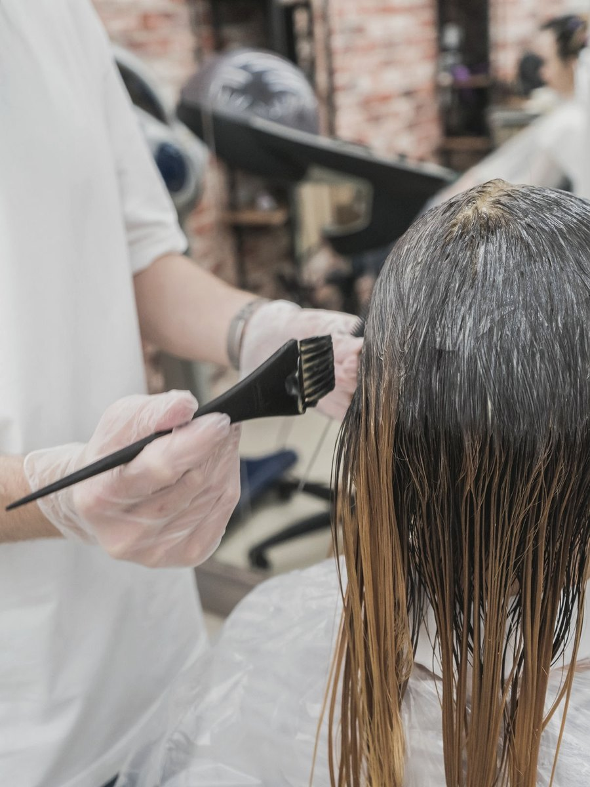
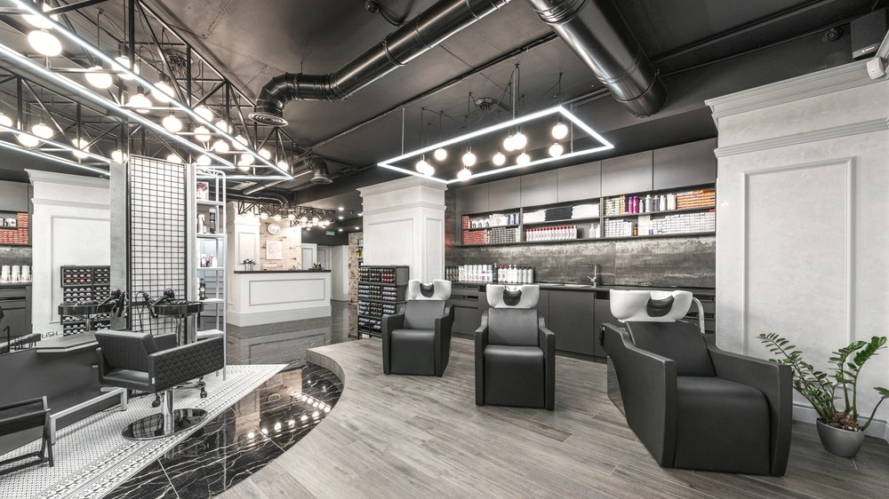
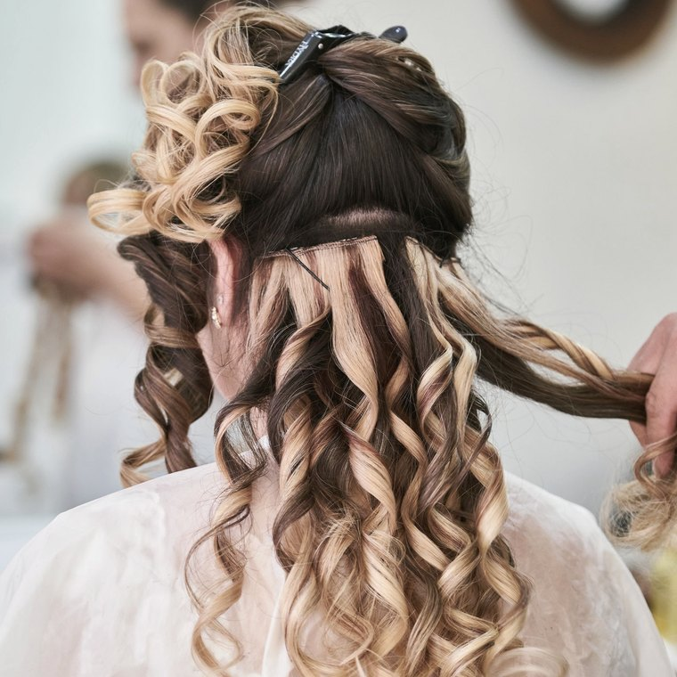
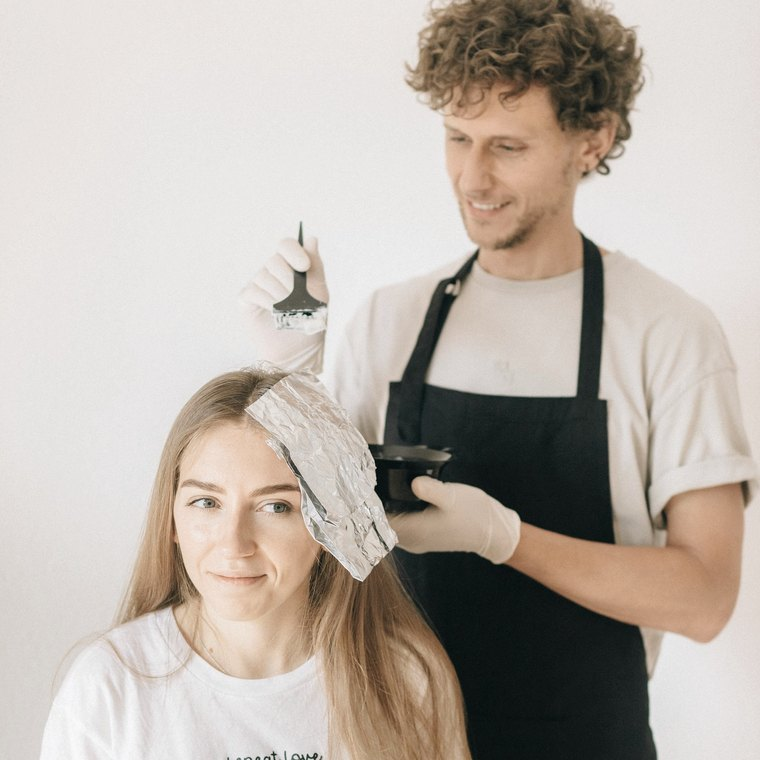

Kissía Mall · Dom Pedro · Manaus — AM
A casa trabalha mechas nos dois caminhos — com e sem descoloração — e a primeira conversa serve para descobrir qual dos dois o seu cabelo aguenta hoje.
A escolha que define tudo
A escala de tom não é decoração: é a conversa da avaliação. Você diz aonde quer chegar, a gente diz por qual caminho dá.

A Eliane não só executa mechas sem descolorir: ela batizou o processo de Método RÓTTI e ensina outras profissionais a fazê-lo, com estratégia e naturalidade.
Isso muda o que acontece na sua cadeira. Cada etapa tem um porquê que já foi explicado numa sala de aula — não é improviso de dia agitado.
Ela é pós-graduada em Tricologia, e o diagnóstico do couro cabeludo vem antes da cor.
O primeiro salão terapêutico de Manaus
A casa se define como salão terapêutico: além da cor e do corte, existe uma frente inteira dedicada à saúde do fio e do couro cabeludo.

Quem atende
Fundadora
Pós-graduada em Tricologia e criadora do Método RÓTTI. Atende e ensina.
Terapeuta capilar
Cor, mechas e acompanhamento dos protocolos de tratamento.
Terapeuta capilar
Corte, finalização e cuidado do fio ao longo das sessões.


Atendimento só com hora marcada — porque cada cabeça leva o tempo que leva.
Contato
Mande uma foto do seu cabelo com luz natural e conte o histórico de química dos últimos dois anos. É com isso que a gente define se o caminho é com ou sem descoloração.
Como chegar